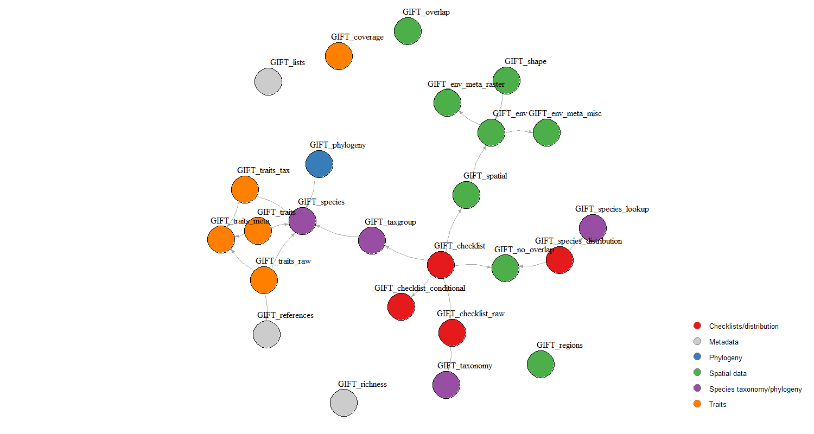

Queries in the API
Pierre Denelle & Patrick Weigelt
2025-04-09
Source:vignettes/web_only/GIFT_API.Rmd
GIFT_API.Rmd

This vignette shows how to work with the API, how it relates to the GIFT R package, and how the R functions in the package are interdependent.
API
The API endpoint is https://gift.uni-goettingen.de/api/extended/index.php.
We then have several queries, listed in the table below, that allow
retrieving distinct tables. The name in the Query column of the table
below has to be used as the query argument. As an example, here is the
query that leads to the environmental raster metadata table:
https://gift.uni-goettingen.de/api/extended/index.php?query=env_raster
Note that the endpoint changes depending on the version of GIFT
you are querying. For example, with the same table as above, we can
retrieve the table as it was in GIFT version 2.0:
https://gift.uni-goettingen.de/api/extended/index2.0.php?query=env_raster
While this API does not require authentication, there is a
password-protected API leading to some restricted content in the
different tables. Restricted content can be,for example, some checklists
that need the approval of their provider before being used. This API can
be communicated upon request.
Here is the list of the 24 available queries, their arguments
and the GIFT R functions in which they are called. There is no
rate-limitation for any of these queries except for species and
phylogeny, which retrieves the data in chunks.
| Query | Arguments | R_function |
|---|---|---|
| checklists | listid (integer) , taxonid, namesmatched, filter | GIFT_checklists_raw() |
| env_misc | GIFT_env_meta_misc() | |
| env_raster | GIFT_env_meta_raster() | |
| geoentities_env_misc | envvar | GIFT_env() |
| geoentities_env_raster | layername, sumstat | GIFT_env() |
| lists | GIFT_lists(), GIFT_checklists_conditional(), GIFT_checklists() | |
| names_matched | genus, epithet | GIFT_species_lookup() |
| names_matched_unique | genus, epithet | GIFT_species_lookup() |
| overlap | taxon, startat | GIFT_species_distribution(), GIFT_no_overlap(), GIFT_checklists() |
| overlap_misc | layer | GIFT_overlap() |
| phylogeny | taxon, startat, limit | GIFT_phylogeny() |
| references_citavi | GIFT_env_meta_raster(), GIFT_env_meta_misc() | |
| references | GIFT_references() | |
| reference_traits | GIFT_traits_raw() | |
| regions | GIFT_regions() | |
| species | startat, limit | GIFT_species() |
| species_distr | nameid | GIFT_species_distribution() |
| species_num | taxonid | GIFT_richness() |
| taxonomy | GIFT_taxonomy(), GIFT_taxgroup(), GIFT_richness(), GIFT_checklists_raw(), GIFT_checklists(), GIFT_checklists_conditional() | |
| traits | traitid, biasref, biasderiv, startat, limit | GIFT_traits() |
| traits_cov | traitid, taxonid | GIFT_richness() |
| traits_meta | GIFT_traits_meta() | |
| traits_raw | traitid, deriv, biasderiv, refid | GIFT_traits_raw() |
| versions | All GIFT functions |
Some more details:
# Query for trait and chunks
# Default value for end is 10000
# https://gift.uni-goettingen.de/api/extended/index.php?query=traits&
# traitid=1.1.1&biasref=1&biasderiv=1&startat=100000&limit=10
# To retrieve the geojson
paste0("https://gift.uni-goettingen.de/geojson/geojson_smaller",
ifelse(GIFT_version == "beta", "", GIFT_version), "/",
entity_ID[i], ".geojson")Dependency graph of R functions
Arrows in the figure below connect interdependent functions,
i.e. functions that call other functions. Function names are colored
according to the larger category to which they belong.

References
Denelle, P., Weigelt, P., & Kreft, H. (2023). GIFT—An R package to access the Global Inventory of Floras and Traits. Methods in Ecology and Evolution, 00, 1–11. https://doi.org/10.1111/2041-210X.14213.
Weigelt, P., König, C. & Kreft, H. (2020) GIFT – A Global Inventory of Floras and Traits for macroecology and biogeography. Journal of Biogeography, https://doi.org/10.1111/jbi.13623.